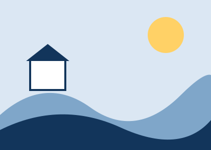

Welcome to the Marrowvale fictional state portal
A signposting layer for invented services. Search the sample directory, or browse the topics below. Nothing here is real.
Suggested searches

Browse by topic
Permits & Passes
Illustrative passes for orchards, canals, kite fields and trails.
Explore Permits & PassesMakers & Markets
Sample market and workshop listings for invented makers.
Explore Makers & MarketsCommunity & Learning
Pretend reading rooms, evening classes and gardens.
Explore Community & LearningParks & Heritage
Sample walks, viewpoints and museum listings in the directory.
Explore Parks & Heritage servicesGovernment Information
Directories and notices that belong to this fictional portal.
Explore Government Information services
From elsewhere (off-site, not real)
The reference portal highlights companion services hosted on other sites. Here they are shown as labelled, non-functional placeholders that go nowhere.
Portal Companion App
An invented companion service for saving favourite pages.
Off-site, fictional, not linked
Trail Transparency Notes
An invented set of notes about sample trails.
Off-site, fictional, not linked
Small Works Office
An invented office that appears in the agency directory.